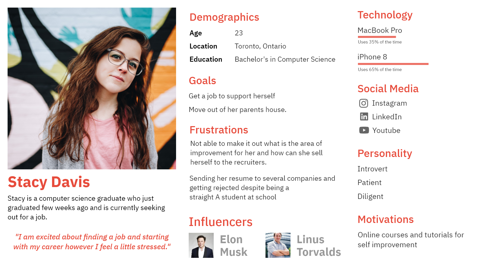

Plato
Plato is an web app that helps users find learning content and resources relevant to a specific profession. It curates, recommends and provides links to already existing content such as videos, articles, books etc. based on user preferences.
Client
Ashraful Hasan
My Role
Product Designer
Duration
3 months
The Problem
User had to input in a lot of information through a form and forms can be long and boring. This could affect the experience of the user and drive him away from the platform. The challenge here is to design a form which could takes hours to fill(not at the same time).
Research
Persona
We interviewed 6 people to Understanding Social Entrepreneurs and thier problems and based on that determine set of features to solve thier problems
Key Outcomes
- I want to manage my team and distribute tasks
- I want to meet other entrepreneurs who believe in the same cause as I do
- I want to trust those who are investing in my business
- I want to connect with investors with the same social values as myself
- I want to spend less time doing paperwork
- I want to meet other entrepreneurs who believe in the same cause as I do
- I get frustrated when I have to do repetitive work for different project applications
User Journey Mapping